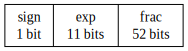

-Ofast and -ffast-math non-local effects
Tl;DR:
-ffast-math / -Ofast options are very tricky to use correctly!
In addition to breaking your immediate floating point arithmetic code
(which you might be prepared for) it also breaks the code not compiled
with these options but happen to be present in the same address
space:
Here I assume that code built with -Ofast was clean and was prepared
to changes caused by -Ofast effect. -O2-compiled code was not
prepared for -Ofast flag effects.
All the red boxes are negatively affected by the module compiled with
-Ofast.
More words
Let’s start off with an executable example: we’ll construct a very small
double value and print it with some of its properties:
An example
#include <math.h>
#include <stdio.h>
static const char * fpc(double v) {
switch (fpclassify(v)) {
case FP_ZERO: return "FP_ZERO";
case FP_SUBNORMAL: return "FP_SUBNORMAL";
case FP_NORMAL: return "FP_NORMAL";
case FP_INFINITE: return "FP_INFINITE";
case FP_NAN: return "FP_NAN";
default: return "UKNOWN (unhandled?)";
}
}
int main() {
double small = 0x1.0p-1040;
volatile double also_small = 0x1.0p-1040;
printf(" small = %a or %e (%s)\n", small, small, fpc(small));
printf("also_small = %a or %e (%s)\n", also_small, also_small, fpc(also_small));
}C standard defines a few FP classes (taken from man fpcassify):
FP_NAN: x is “Not a Number”.FP_INFINITE: x is either positive infinity or negative infinity.FP_ZERO: x is zero.FP_SUBNORMAL: x is too small to be represented in normalized format.FP_NORMAL: if nothing of the above is correct then it must be a normal floating-point number.
I am using volatile on also_small to prevent gcc from folding
constants at compile time. I also use gcc extension to write down
floats in hexadecimal form (instead of decimal form).
Quick quiz: what class should the above program print you think?
Let’s run it and see the answer:
$ gcc a.c -o a -O2 && ./a
small = 0x0.00004p-1022 or 8.487983e-314 (FP_SUBNORMAL)
also_small = 0x0.00004p-1022 or 8.487983e-314 (FP_SUBNORMAL)
$ gcc a.c -o a -Ofast && ./a
small = 0x0.00004p-1022 or 8.487983e-314 (FP_SUBNORMAL)
also_small = 0x0.00004p-1022 or 8.487983e-314 (FP_ZERO)
$ gcc a.c -o a -ffast-math && ./a
small = 0x0.00004p-1022 or 8.487983e-314 (FP_SUBNORMAL)
also_small = 0x0.00004p-1022 or 8.487983e-314 (FP_ZERO)Apparently it depends! On -O2 the value is detected as FP_SUBNORMAL
and on -Ofast (or -ffast-math) it goes as FP_ZERO. Thus, printf()
disagrees and prints something that looks more like a small number than
zero.
That is unfortunate. But maybe it’s expected by someone who uses
-Ofast?
Cross-module effects
Let’s create an empty empty.c file and build it with -Ofast. And
then build our initial program with -O2. I’ll use gcc-12
specifically:
$ touch empty.c
$ gcc-12 -shared -fPIC empty.c -Ofast -o libfast.so
$ gcc-12 -O2 a.c -o a && ./a
small = 0x0.00004p-1022 or 8.487983e-314 (FP_SUBNORMAL)
also_small = 0x0.00004p-1022 or 8.487983e-314 (FP_SUBNORMAL)
$ gcc-12 -O2 a.c -o a -L. -Wl,--no-as-needed -lfast -Wl,-rpath,'$ORIGIN' && ./a
small = 0x0.00004p-1022 or 8.487983e-314 (FP_SUBNORMAL)
also_small = 0x0.00004p-1022 or 8.487983e-314 (FP_ZERO)See the difference?
Some distributions like Debian or Ubuntu use -Wl,--as-needed by
default and throw away the library dependencies without explicit symbol
references. -Wl,--no-as-needed makes sure we still retain -lfast in
our runtime dependencies.
Note how the mere presence of libfast.so in the library dependencies
changes output of the program otherwise compiled and liked with -O2
option:
Breakage mechanics
Before looking at the implementation let’s look at the option
descriptions gcc man page provides:
-ffast-math
Sets the options -fno-math-errno, -funsafe-math-optimizations,
-ffinite-math-only, -fno-rounding-math, -fno-signaling-nans,
-fcx-limited-range and -fexcess-precision=fast.
This option causes the preprocessor macro "__FAST_MATH__" to be defined.
This option is not turned on by any -O option besides -Ofast since it
can result in incorrect output for programs that depend on an exact
implementation of IEEE or ISO rules/specifications for math
functions. It may, however, yield faster code for programs that do not
require the guarantees of these specifications.Note how vague the description is: it says your floating point code
might do something funny that violates C standard but does not go into
specifics.
For most people it should be a good hint not to use the option lightly.
The effect we see in fpclassify() in our example’s instability is the
result of -funsafe-math-optimizations option. That one is described as:
-funsafe-math-optimizations
Allow optimizations for floating-point arithmetic that (a) assume that
arguments and results are valid and (b) may violate IEEE or ANSI
standards. When used at link time, it may include libraries or
startup files that change the default FPU control word or other
similar optimizations.
This option is not turned on by any -O option since it can result in
incorrect output for programs that depend on an exact implementation
of IEEE or ISO rules/specifications for math functions. It may,
however, yield faster code for programs that do not require the
guarantees of these specifications. Enables -fno-signed-zeros,
-fno-trapping-math, -fassociative-math and -freciprocal-math.
The default is -fno-unsafe-math-optimizations.This option changes global setting of an FP unit at program start.
This change affects not only the code explicitly compiled with
-ffast-math but also affects everything else that resides in the same
address space.
Mechanically the FPU state changes when gcc links crtfastmath.o
on -Ofast / -ffast-math. Object file is implemented via spec
machinery:
$ gcc -dumpspecs | fgrep crtfastmath
... %{Ofast|ffast-math|funsafe-math-optimizations:crtfastmath.o%s} ...This spec dump tells gcc to always add a crtfastmath.o as an input
if any of -Ofast, -ffast-math or -funsafe-math-optimizations is
passed to gcc. We can also verify it with -Wl,-t to trace all linker
inputs:
$ touch a.c
$ gcc -shared a.c -o libshared.so -Wl,-t |& fgrep crtfast
<nothing>
$ gcc -shared a.c -o libshared.so -Wl,-t -Ofast |& fgrep crtfast |& unnix
/<<NIX>>/gcc-12.3.0/lib/gcc/x86_64-unknown-linux-gnu/12.3.0/crtfastmath.oTo achieve this effect libgcc/config/i386/crtfastmath.c defines global
constructor to change FP state:
static void __attribute__((constructor))
set_fast_math (void)
{
unsigned int mxcsr = __builtin_ia32_stmxcsr ();
mxcsr |= MXCSR_DAZ | MXCSR_FTZ;
__builtin_ia32_ldmxcsr (mxcsr);
}The above code sets two flags normally disabled in mxcsr SSE flags
register:
DAZ: Denormalized-Are-Zero - denormalized inputs are treated as zeros.FTZ: Flush-To-Zero - denormalized outputs are converted to zero.
This effect was seen as too problematic by many and gcc-13 stopped
enabling crtfastmath.o for libraries (-shared option) in
https://gcc.gnu.org/PR55522.
clang-19 will follow gcc example in
https://github.com/thexujie/llvm-project/commit/971cc613e994a308f939f68247257b65e04c74fa.
On top of that clang-19 will have a -mdaz-ftz / -mno-daz-ftz flag
to override the default.
While the fix limits the impact to final programs that enable -Ofast
it is still able to break all the libraries linked into the program
linked with -Ofast.
As the library test suites are usually not ran with -Ofast the
breakage might not be noticed until data corruption starts happening on
real data in final applications.
Actual breakage in an actual program
I did not know about this -ffast-math problem until nixpkgs updated
libsodium library to 1.0.19 which started defaulting to
-Ofast in "Try using -Ofast / -O3 by default" commit.
After a libsodium upgrade test suites for various programs started
failing with obscure errors of data corruption around double conversion
to string and back. In some of the cases libsodium was not even used
directly and was an indirect dependency via libzmq:
It was very confusing to see bitcoind to fail double serialization /
deserialization tests after libsodium update (which API was not used
in the program at all).
I usually try to avoid crypto-currency software. But in this case compiler was implied to generate bad code and I had to look closer.
Other compilers
clang also considers disabling crtfastmath.o for shared libraries
to follow gcc lead: https://github.com/llvm/llvm-project/issues/57589.
According to Wikipedia
ICC enables -ffast-math equivalent on the optimizations above -O0.
That sounds quite unsafe.
Why do we even have that lever?
But why do these transformations exist at all? Why treat small double
differently compared to larger values? We don’t do it with small
integers after all (I hope!).
Apparently at least older CPUs (and maybe modern ones as well?) were slower to handle denormalized values. Sometimes 100x slower. Thus, cutting a corner here might have a visible win in applications that don’t care about precision or predictability of the result.
Binary representation of floating points
How small those values need to be to get flushed to zero on occasion?
Wikipedia’s “Double-precision floating-point format” article
is a great detailed explanation of the float64 format.
Tl;DR: all the numbers of 64-bits have the following bit layout:
Depending on the exponent exp value there are two formulas and
three(ish) cases:
- Normalized values (for
expin1-2046range): - Denormalized values: (for
exp == 0): exp == 2047:NaNand infinities of sorts
The main detail here is implied 1.frac vs 0.frac in the first two
cases. Otherwise, the structure is the same. A few examples of value
encodings:
| value | encoded | sign/exp/frac |
notes |
|---|---|---|---|
0x1.5p0 |
0x3ff5000000000000 |
0/0x3ff/0x0005000000000000 |
A normalized value |
0x1.0p-1022 |
0x0010000000000000 |
0/1/0 |
Smallest normalized value |
0x0.fffffffffffffp-1022 |
0x000fffffffffffff |
0/0/0x000fffffffffffff |
Largest denormalized value |
0x1.5p-1040 |
0x0000054000000000 |
0/0/0x0054000000000 |
A denormalized value |
0x1.0p-1074 |
0x0000000000000001 |
0/0/1 |
Smallest denormalized value |
0.0 |
0x0000000000000000 |
0/0/0 |
Positive zero |
-0.0 |
0x8000000000000000 |
1/0/0 |
Negative zero |
Inf |
0x7ff0000000000000 |
0/0x7ff/0 |
Positive infinity |
-Inf |
0xfff0000000000000 |
1/0x7ff/0 |
Negative infinity |
NaN |
0xfff8000000000000 |
1/0x7ff/0x0008000000000000 |
NaN for 0/0 value |
There are various curious facts about this encoding:
Normalized and denormalized value sets do not intersect: all denormalized absolute values are smaller than smallest normalized value.
Having a short glance at first 3 hexadecimal digits is enough to get the
idea which FP class we are looking at:
0x000 / 0x800: Denormalized numbers or zero0x7ff / 0xfff:NaNor infinities
Normalized values do not allow for 0.0 encoding: frac always has
an implied leading 1. start for fraction. Thus, zeros have to be
encoded using denormalized scheme.
(Positive) zero is encoded as all zero bits. Thus, memset() on array of
floats creates sensible array of zeros.
There are two zeros: signed and unsigned.
While zeros require subnormal encoding of an exponent they are
considered a separate FP_ZERO class from FP_SUBNORMAL
Normalized values use all their 52 bits of fraction for precision. Denormalized values usually use less as they maintain a few leading zeros to encode smaller values.
Looking at the binary representation one can imagine how CPU would implement at least trivial operations (like addition and subtraction) on floating points with the same exponent value and then slightly extend it to operation on numbers with different exponents.
The effect of MXCSR_DAZ and MXCSR_FTZ
By now it should be clear that MXCSR_DAZ and MXCSR_FTZ flags
effectively turn any denormalized value into zero for any FP operation.
The minor problem happens if denormalized value is already constructed
in memory and is used by something else. That is why we get seemingly
nonsensical result above when FP_ZERO has a non-zero encoding:
also_small = 0x0.00004p-1022 or 8.487983e-314 (FP_ZERO)Is it hard to hit a denormalized value? It depends! If you operate on small values like (micros) and use to raise it to higher powers, like 16, then you get outside the normal range:
These are very small values.
With such flushing enabled it is a lot easier to hit a NaN by dividing
(flushed) zero by (flushed) zero or by subtracting infinities a bit after.
Parting words
-Ofast is not a safe option to use without a second thought. In
addition to breaking your immediate floating point arithmetic code
-ffast-math / -Ofast also breaks the code not compiled with these
options. This non-local effect is most problematic.
libsodium tried it and broke a few reverse dependencies that relied on
denormalized values to work as expected.
For the time being libsodium rolled back
-Ofast default. That should stop FP code breakage for users of older
gcc.
There probably is a lot more packages enabling -Ofast without
realizing what effects it causes on FP code correctness somewhere
else.
To notice the problem the code needs to exercise denormalized values which might require very small actual values as operands.
What is worse: the truncation problems might come and go depending on
what compiler decides to do with the intermediate values. It can perform
an operation on FP unit and observe the truncation, pass it in
memory and process using bitwise arithmetic and not observe the
truncation or re-associate the operations and expose denormalized values.
This instability effect is very similar to i387 FPU instability
on i386 documented at https://gcc.gnu.org/wiki/x87note.
Floating point encoding is straightforward, but is full of corner cases:
normalized, denormalized, zeros, infinities and NaN. Handling all the
cases requires extra work from the programmer and the CPU.
MXCSR_DAZ and MXCSR_FTZ status bits allow CPU to treat most
denormalized values as zeros at a cost of C and IEEE standard
conformance.
Have fun!